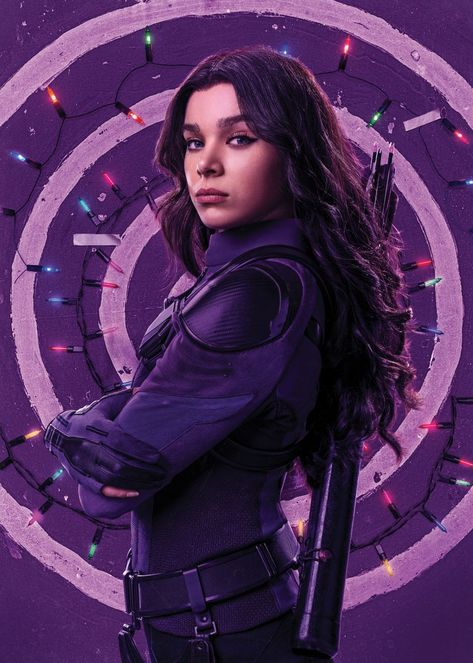

| Names w/Images | Character Description | Powers/Abilities |
|---|---|---|
Scarlet Witch

|
One of the most powerful magic-wielders on the planet, Wanda Maximoff (a.k.a. The Scarlet Witch) casts her spells to aid the downtrodden as an Avenger while seeking out the roots of sorcery wherever they may grow. Wanda can manipulate Chaos Magic, which is so powerful, she has been able to generate armies from seemingly nowhere. |
⦾ Psychic energy manipulation
⦾ Telekinesis ⦾ Mental manipulation ⦾ Telepathy ⦾ Chaos Magic |
| Spiderman | Teenager Peter Parker, a poor sickly orphan, is bitten by a radioactive spider. As a result of the bite, he gains superhuman strength, speed, and agility, along with the ability to cling to walls, turning him into Spider-Man. |
⦾ Superhuman strength
⦾ Enhanced durability ⦾ Wall climbing ⦾ "Spidey Senses" |
| Deadpool | Wade Wilson is a wisecracking mercenary with accelerated healing, but severe scarring over his body after undergoing an experimental cancer treatment. |
⦾ Superhuman agility
⦾ Enhanced strength ⦾ Regeneration ⦾ Marksmanship |
White Widow

| Yelena Belova (a.k.a. The Black Widow/formerly The White Widow) is an amoral spy and assassin who was trained at the Red Room by the same spymasters who trained Natasha Romanoff, the first Black Widow. |
⦾ Experienced spy
⦾ Marksmanship ⦾ Hand-to-hand combat ⦾ Various Martial Arts ⦾ Skilled tactician |
| Hawkeye  | The strong-willed Kate Bishop is a masterful archer who uses her excellent marksmanship to fight against evil. |
⦾ Archery
⦾ Dueling ⦾ Various Martial Arts ⦾ Swordsmanship |